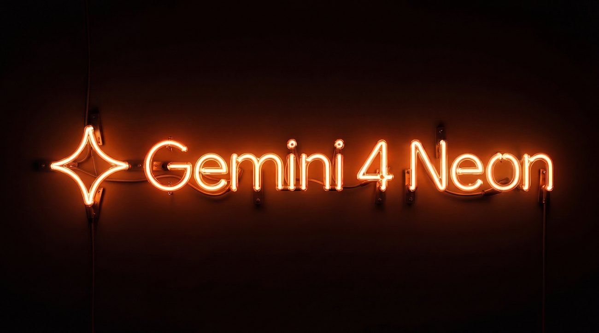
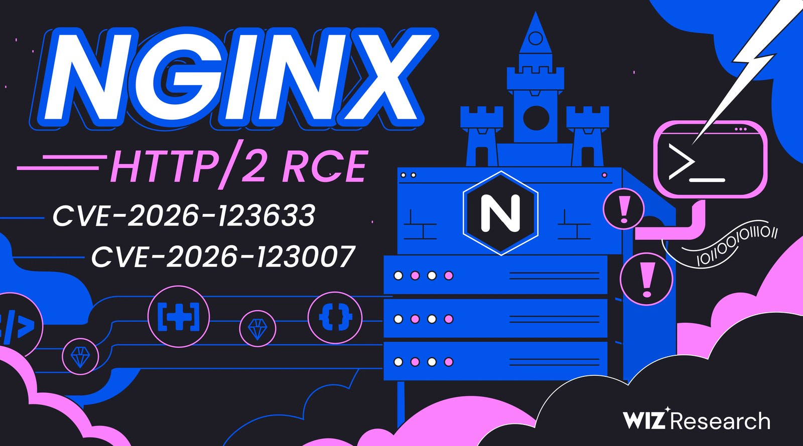

头条 一

图片来源：Google谷歌 11 月 18 日发布 Gemini 4 Neon，定位介于 Carbon 与 Hydrogen 之间，上下文 100 万 token。谷歌称它在 Artificial Analysis 智能指数 xhigh 档得 61 分、排第三，高档位每任务成本比 Carbon 低 32%。
排名和成本来自谷歌引用的第三方榜单和自家测试，尚无独立复现。值得看的是定价思路：把够用的前沿能力卖得更便宜。
来源：Google
头条 二

图片来源：WizF5 11 月 18 日发布安全更新，修复 CVE-2026-123633 与 CVE-2026-123007，评分均为 9.2。后者影响 2015 年发布的 1.9.5 起的版本。Wiz 称用 AI 代码审计工具发现，Rapid7、Xint 等也独立报告。升级到 1.30.7 或 1.31.9。
Wiz 的看法是：内存安全漏洞过去靠“难找”自保，AI 在拆掉这道门槛。暂时不能升级的，可先关闭 HTTP/2。
来源：Wiz
头条 三
据 TechCrunch 报道，Anthropic 将 IPO 定价为每股 83 美元，高于 70 至 78 美元的区间，按完全稀释估值约 1.5 万亿美元，今天起在纳斯达克以代码 ANT 交易。这高于 5 月私募的 9650 亿美元，低于此前传出的 2 万亿美元目标。
口径为“据报道”，以交易所公告为准。首日表现会被当作私有 AI 公司估值的参照，OpenAI 尚未宣布上市计划。
来源：TechCrunch
Neon 的账单比跑分有意思：能力下放到中档，贵的前沿档就得解释自己贵在哪。
Nginx 这类老代码的漏洞，AI 找得比人快，补丁速度才是真正的瓶颈。
Anthropic 定价低于传闻目标、高于上次私募，市场给的是“贵但没那么贵”。